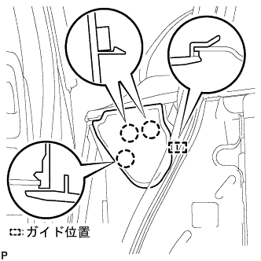
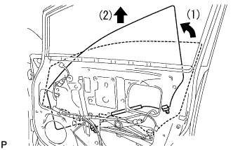
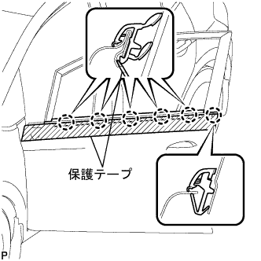
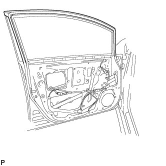
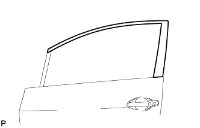

Blackout Tape NO.2 LH Removal |
| 1. Remove Front Door Inside Handle Bezel LH |
 |
Using a screwdriver with its tip wrapped in protective tape, disengage the 3 claws and remove the front door inside handle bezel RH.
| 2. Remove Door Assist Grip Cover LH |
 |
Using a screwdriver with its tip wrapped in protective tape, disengage the 4 claws and remove the door assist grip cover RH.
| 3. Remove Front Door Trim Board Sub-assembly LH |
 |
Remove the 3 screws.
 |
Using a clip remover, disengage the 9 clips of the front door trim board RH.
Disengage the 4 claws and disconnect the front door trim board RH from the front door glass weatherstrip inner RH.
 |
Disengage the 2 claws and remove the front door trim board RH from the front door inside handle RH.
Disconnect the connectors.
| 4. Remove Front Door Inside Handle Sub-assembly LH |
 |
Disconnect the front door lock remote control cable RH and front door inside locking cable RH, and remove the front door inside handle RH.
| 5. Remove Front Door Glass Weatherstrip Inner LH |
 |
Remove the front door glass weatherstrip inner RH from the front door panel.
| 6. Remove Front Door Service Hole Cover LH |
 |
Disconnect the connector.
Remove the front door service hole cover RH.
| 7. Remove Outer Mirror Install Hole Cover LH |
 |
Disengage the 3 claws.
Disengage the guide and remove the outer mirror install hole cover RH.
| 8. Remove Outer Rear View Mirror Assembly w/ Cover |
 |
Disconnect the connector.
Remove the 3 bolts and remove the outer rear view mirror assembly w/ cover.
| 9. Remove Front Door Glass Sub-assembly LH |
Connect the battery negative terminal and power window regulator master switch assembly, and move the front door glass RH to a position where the front door glass RH installation bolts are visible.
Disconnect the battery negative terminal and power window regulator master switch assembly.
 |
Remove the 2 bolts.
 |
Remove the front door glass RH in the order shown in the illustration.
| 10. Remove Front Door Glass Run LH |
 |
Remove the front door glass run RH.
| 11. Remove Front Door Belt Moulding Assembly LH |
 |
Apply protective tape to the body surface below the front door belt moulding assembly LH.
Using a screwdriver with its tip wrapped in protective tape, disengage the 6 claws from the inside of the door and remove the front door belt moulding assembly LH.
| 12. Remove Front Door Weatherstrip LH |
 |
Remove the front door weatherstrip LH far enough to allow the blackout tape to be removed.
| 13. Remove Blackout Tape NO.1 LH |
 |
Using an infrared lamp, loosen blackout tape No.1 LH.
Raise the end of blackout tape No.1 LH with a fingernail and peel it off parallel to the application surface.
| 14. Remove Blackout Tape NO.2 LH |
Using an infrared lamp, loosen blackout tape No.2 LH.
 |
Raise the end of blackout tape No.2 LH with a fingernail and peel it off parallel to the application surface.